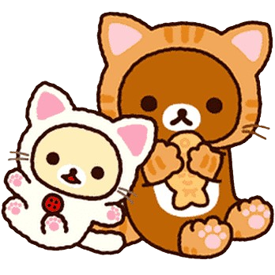
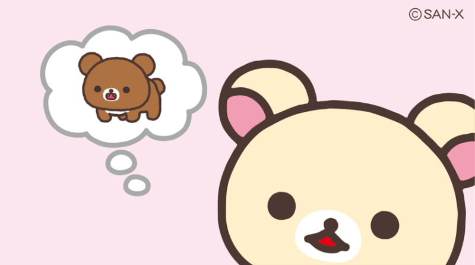
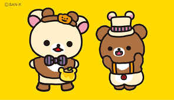
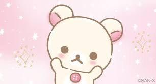
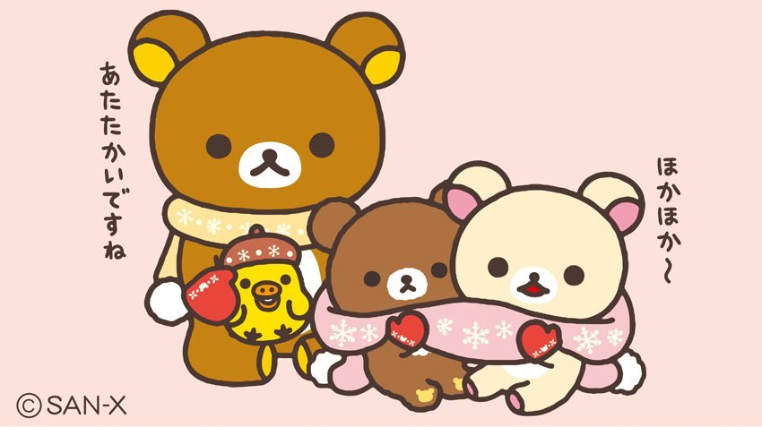
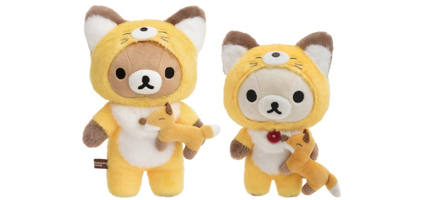
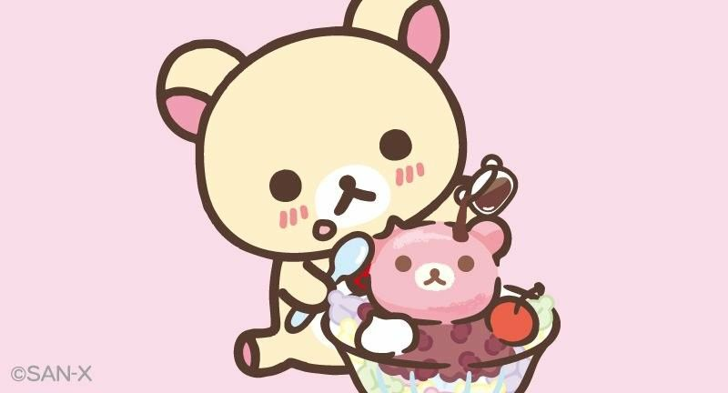

외형
- 아이보리색의 털과 분홍색 귀, 가슴의 빨간 단추가 특징인 곰인형이다.
- 장난감을 좋아한다는 특성을 반영해 작은 인형이나 장난감을 들고 있는 인형도 있다.
- 키는 리락쿠마의 반 정도이다
특징
- 장난치기, 놀이, 음악듣기를 좋아한다. 하드 록 광팬인데 리락쿠마와 키이로이토리와는 선호하는 음악이 다르다.
- 의외의 능력을 가지고 있는데, 눈을 번쩍 뜨면 헤엄치던 금붕어가 멈추기도 하고, 맛있는 딸기를 구분할 수도 있다.
- 딸기, 사과, 체리, 특히 그 중에서도 딸기를 좋아한다. 단 음식도 많이 좋아한다.
코리락쿠마 일러스트





